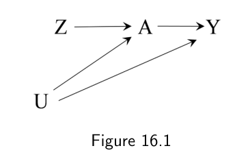
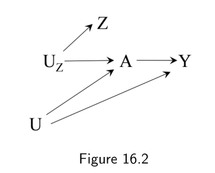
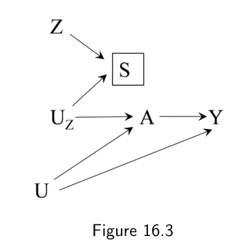
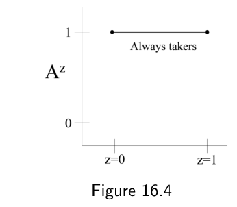
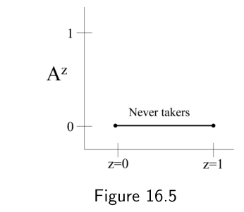
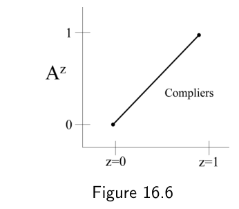
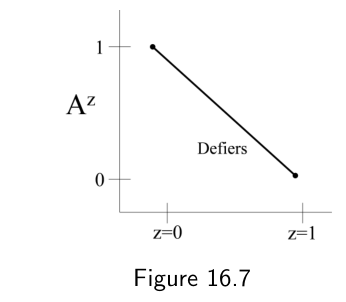
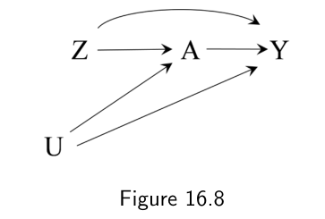
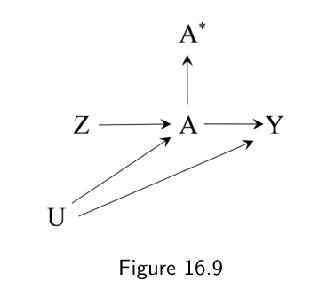
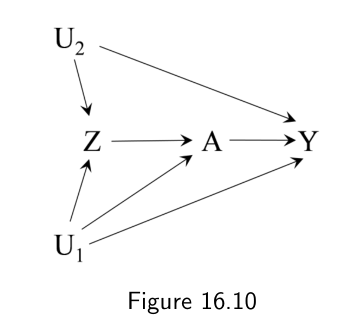

第二部分 · 基于模型的因果推断 · Part II — Causal inference with models
第 16 章 · 工具变量估计
Hernán MA, Robins JM（2020）. Causal Inference: What If. Chapter 16. 本页为中文全文翻译，附译注。
本书迄今介绍的因果推断方法，都依赖一个关键且不可检验的假设：所有需要用于控制混杂和选择偏倚的变量，都已被识别并正确测量。如果这个假设不成立——它总会在一定程度上不成立——我们的因果估计里就会残留偏倚。不过，还存在另一些方法，能在不要求测量全部调整因素的一组替代假设下，有效地估计因果效应。工具变量估计就是其中之一。读这本书的经济学家和其他社会科学家现在可以松口气了：我们终于要讲一个他们领域里极为常见、却与我们之前讨论过的任何方法都不同的方法。
16.1 三个工具条件
图 16.1 的因果图描绘了一个随机化试验：Z 是随机化分组指标（1：处理，0：安慰剂），A 是是否接受处理的指标（1：是，0：否），因为并非所有参与者都遵守分组安排，Y 是结局，U 是所有同时影响结局和依从性的因素（其中有些未被测量）。因为参与者和他们的医生都不知道手里的药是治疗药还是安慰剂，他们被称为"被施以盲法"，这项研究也就称为双盲安慰剂对照随机化试验。
假设我们想一致地估计 A 对 Y 的平均因果效应。无论用逆概率加权、标准化、g 估计、分层还是匹配，我们都需要正确测量并调整那些能阻断后门路径 A ← U → Y 的变量，也就是要保证处理组与未处理组的条件可交换性。遗憾的是，如果某些必要变量未被测量、测量不精确或模型设定有误，所有这些方法都会给出有偏的效应估计。
工具变量（IV）方法则不同：即便我们没有测量那些通常需要用来调整由 U 造成的混杂的变量，也可以在这样一个随机化试验中，尝试识别 A 对 Y 的平均因果效应。要施展这种"魔法"，IV 方法需要一个工具变量 Z，或称工具。变量 Z 之所以成为工具，是因为它满足三个工具条件：
(i) Z 与 A 相关
(ii) Z 不影响 Y，除非通过它对 A 的潜在影响
(iii) Z 和 Y 没有共同的原因
关于这些条件的更严格定义，见技术要点 16.1，我们在其他技术要点中也会用到。
在上面那个双盲随机化试验中，随机化指标 Z 就是一个工具。条件(i)成立，因为分到处理组的参与者更可能接受治疗；条件(ii)由双盲设计所保证；条件(iii)由 Z 的随机分配所保证。条件(ii)并不是天然保险的——举例来说，如果参与者因为治疗的副作用而无意中被揭盲，它就不成立了。


图 16.1 描绘了一个特例：工具 Z 对处理 A 有因果效应。这时我们称 Z 为因果工具。有时因果工具未被测量，我们就使用一个已测量的代理或替代工具 Z，它与未测量的因果工具 UZ 相关。替代工具对处理 A 没有因果效应，但它满足工具条件——其中 Z-A 关联(i)现在来自 Z 和 A 共享的原因 UZ，而条件(iii)被修改为"Z 和 Y 没有共同原因，UZ 除外"。因果工具和替代工具都可以用于 IV 估计，但有一些注意事项（见第 16.4 节）。作为趣闻，图 16.3 描绘了一个不寻常的替代工具 Z 在选定人群中的例子：Z-A 关联来自对未测量因果工具 UZ 与替代工具 Z 的共同效应 S 进行条件化。

在之前的章节中，我们已经用各种因果推断方法，基于观察性数据估计了戒烟对体重变化的影响。要用 IV 方法估计这个效应，我们需要一个工具 Z。由于观察性研究里没有随机化指标，考虑下面这个候选工具：香烟价格。可以说，如果满足以下条件，这个变量就满足三个工具条件：(i) 香烟价格影响戒烟的决定，(ii) 香烟价格只通过它对戒烟的影响来影响体重变化，(iii) 香烟价格和体重变化之间没有共同原因。精细辨析 16.1 回顾了观察性研究中提出过的一些工具。
为了明确思路，我们提出一个工具 Z：当个体出生所在美国州的一包香烟平均价格高于 1.50 美元时取 1，否则取 0。遗憾的是，我们无法确定自己的变量 Z 是否真的是工具。三个工具条件里，只有条件(i)可以在经验上验证。要验证它，我们需要确认提出的工具 Z 与处理 A 相关，即 Pr[A=1|Z=1] − Pr[A=1|Z=0] > 0。戒烟的概率在 Z=1 的人群中是 25.8%，在 Z=0 的人群中是 19.5%；因此风险差 Pr[A=1|Z=1] − Pr[A=1|Z=0] = 6%。当 Z 和 A 像这样弱相关时，Z 常被称为弱工具（弱工具详见第 16.5 节）。
另一方面，条件(ii)和(iii)无法在经验上验证。要验证条件(ii)，我们需要证明 Z 只能通过处理 A 引起结局 Y。我们不能通过条件化 A 来验证——A 在图 16.2 的路径 Z ←− UZ → A ←− U → Y 上是一个碰撞因子，条件化它会在 Z 和 Y 之间引入关联，即便条件(ii)本来成立。当然，我们也无法证明条件(iii)成立，因为我们永远无法排除任何变量的效应存在混杂。
条件(ii)和(iii)有时可以被"证伪"：使用工具、处理、结局的数据，可以检验某些特定的违反情形。不过，证伪检验只能排除一小部分违反情况；对于绝大多数违反，即便样本量任意大，检验也无力（Balke 和 Pearl 1997，Bonet 2001，Glymour 等 2012）。我们只能假设条件(ii)和(iii)成立。和本书迄今研究过的所有方法一样，IV 估计也建立在不可检验的假设之上。在观察性研究中，我们无法证明提出的工具 Z 真的是工具。我们称 Z 为"提出的"或"候选"工具，因为我们永远无法保证图 16.1 和 16.2 所代表的结构真的就是实际发生的情况。我们最多能做的，是运用专业知识来论证为什么可以合理地假设提出的工具 Z 满足条件(ii)和(iii)；这和我们运用专业知识来论证前几章方法的识别假设成立，是同一回事。
不过，让我们暂时假设 Z 是工具。然后呢？我们现在能看到 IV 估计的魔法在起作用吗？我们能否不用识别和测量混杂因素，就一致地估计 A 对 Y 的平均因果效应？
遗憾地，答案是：如果没有进一步假设，就不能。单凭一个工具本身，无法识别戒烟 A 对体重变化 Y 的平均因果效应，它只能识别某些上界和下界。通常这些界非常宽，而且常常包含零值（见技术要点 16.2）。
在我们的例子里，这些界没什么帮助。它们只会确认我们已经知道的事：戒烟可能导致体重增加、减轻或不变。不幸的是，除非你愿意做更多无法验证的假设，否则这就是一个工具所能提供的全部。第 16.3 和 16.4 节回顾了使 IV 估计量等于平均因果效应的额外条件。在此之前，我们先介绍所用的方法。
16.2 通常的 IV 估计量
当一个二值变量 Z 是工具，即满足三个工具条件(i)–(iii)，并且下一节将描述的额外条件(iv)成立时，处理在加法尺度上的平均因果效应 E[Ya=1] − E[Ya=0] 就被识别出来，并等于
E[Y|Z=1] − E[Y|Z=0]
──────────────────
E[A|Z=1] − E[A|Z=0]
这就是二值工具的通常 IV 估计量。（注意，对二值处理，E[A|Z=1] = Pr[A=1|Z=1]。）技术要点 16.3 用加法结构均值模型给出了这一结果的证明，不过你也许想等读完下一节再看。
我们重点讨论二值工具，这是最常见的情形。对于连续工具 Z，通常的 IV 估计量是 Cov(Y,Z) / Cov(A,Z)，其中 Cov 表示协方差。
要直观地理解通常的 IV 估计量，再回到前一节的随机化试验。IV 估计量的分子是分组 Z 对 Y 的平均因果效应——即意向性治疗效应（intention-to-treat effect）；分母是分组 Z 对 A 的平均因果效应——即对分配治疗的依从性度量。当依从性完美时，分母等于 1，A 对 Y 的效应等于 Z 对 Y 的效应。随着依从性变差，分母开始趋近于 0，A 对 Y 的效应变得大于 Z 对 Y 的效应。依从性越低，A 对 Y 的效应（即 IV 估计量）与 Z 对 Y 的效应之间的差距就越大。
IV 估计量通过"放大"分组效应（分子）绕过了调整混杂因素的需要。放大的幅度随依从性下降而增大，也就是随 Z-A 风险差（分母）趋近于零而增大。同样的道理适用于观察性研究中使用的工具，其中 IV 估计量的分母可能等于因果工具 Z 对 A 的因果效应（图 16.1），也可能等于替代工具 Z 与处理 A 之间的非因果关联（图 16.2 和 16.3）。
标准的 IV 估计量是通常 IV 估计量分子与分母估计值的比值。在我们这个戒烟例子中，二值工具 Z（1：香烟价格高的州，0：其他）的分子估计 E[Y|Z=1] − E[Y|Z=0] 等于 2.686 − 2.536 = 0.1503，分母 E[A|Z=1] − E[A|Z=0] 等于 0.2578 − 0.1951 = 0.0627。因此，通常的 IV 估计值就是比值 0.1503 / 0.0627 = 2.4 kg。在三个工具条件(i)–(iii)加上下一节的条件(iv)之下，这就是人群中戒烟对体重增加的平均因果效应的一个估计。
我们通过简单计算四个样本均值 E[A|Z=1]、E[A|Z=0]、E[Y|Z=1]、E[Y|Z=0] 来估计 IV 估计量的分子和分母。等价地，我们也可以拟合两个（饱和的）线性模型来估计分母和分子中的差值：分母模型为 E[A|Z] = α0 + α1 Z，分子模型为 E[Y|Z] = β0 + β1 Z。
另一种计算标准 IV 估计量的方法是两阶段最小二乘估计量。步骤如下：首先拟合第一阶段处理模型 E[A|Z] = α0 + α1 Z，并为每个个体生成预测值 E[A|Z]；其次拟合第二阶段结局模型 E[Y|Z] = β0 + β1 E[A|Z]。参数估计 β1 在数值上总是等于标准 IV 估计值。因此，在我们的例子中，两阶段最小二乘估计同样为 2.4 kg。
2.4 这个点的估计有一个极宽的 95% 置信区间：−36.5 到 41.3。这对我们提出的工具来说是预料之中的，因为 Z-A 关联很弱，第一阶段模型有极大的不确定性。一个常用的经验法则是：若第一阶段模型的 F 统计量小于 10，就宣称工具是弱的（我们例子里它可怜地只有 0.8）。我们将在第 16.5 节重新讨论弱工具带来的问题。
把两阶段最小二乘估计量视为识别了处理因果效应所隐含的某些假设，可以通过使用加法或乘法结构均值模型（如技术要点 16.3 和 16.4 所述）用于 IV 估计，而变得更显式。结构均值模型的参数可以通过 g 估计来估计。此外，当存在已测量的、同时是工具和结局共同原因 L 因而必须在分析中调整时，在两阶段最小二乘线性模型与结构均值模型之间做选择所涉及的取舍，类似于非 IV 估计中在结局回归与结构嵌套模型之间做选择（见第 14、15 章）。
总之，上述估计量只有在通常的 IV 估计量能被解释为处理 A 对结局 Y 的平均因果效应时才有效。要做到这一点，除了三个工具条件外，还需要第四个识别条件成立。
16.3 第四个识别条件：同质性
三个工具条件(i)–(iii)不足以保证 IV 估计量是处理 A 对 Y 的平均因果效应。还需要第四个条件——效应同质性(iv)。这里我们按（历史）出现的先后，描述四种可能的同质性条件(iv)。
最极端、也最古老的一个同质性条件(iv)版本，是处理 A 对结局 Y 的效应在个体间恒定不变。在我们的例子中，若戒烟使人群中的每个人都增加（或减少）完全相同的体重，比如恰好 2.4 kg，这个条件就成立。恒定效应等同于加法秩保持，而正如我们在第 14.4 节讨论过的，对大多数处理和结局而言，这在科学上站不住脚——而且对二值结局来说，除非在锐零值或普遍有害（或有益）的情形下，它是不可能的。在我们的例子中，我们预期戒烟后有些人会大幅增重，有些人略有增加，还有些人甚至可能减轻。因此，我们通常不愿接受"恒定效应"这种同质性假设作为一个合理的条件(iv)。
第二个，没那么极端的同质性条件(iv)，针对二值 Z 和 A：在处理组和未处理组中，A 对 Y 的平均因果效应跨 Z 水平相等，即 E[Ya=1 − Ya=0|Z=1, A=a] = E[Ya=1 − Ya=0|Z=0, A=a]，其中 a = 0, 1。这个加法同质性条件(iv)正是技术要点 16.3 数学证明中所用的。技术要点 16.4 讨论了一个乘法尺度上的替代同质性条件（这个乘法同质性条件会导出一个不同于通常 IV 估计量的 IV 估计量）。
上述同质性条件用的是不太直观的表述。学科专家怎么可能为"在提出的工具 Z 和处理的各水平层内，平均因果效应恒定"提供支持论证？更自然——即便仍然不可检验——的同质性条件(iv)会用可能已知（即便未测量）的混杂因素 U 的效应修饰来表述。Hernán 和 Robins（2006b）证明，如果 U 是一个加法效应修饰因子，那么相信前面那个加法同质性条件(iv)成立就不合理。
这样一种条件是：U 不是加法效应修饰因子，即 A 对 Y 的平均因果效应在每个未测量混杂因素 U 的水平上都相同，E[Ya=1|U] − E[Ya=0|U] = E[Ya=1] − E[Ya=0]。这第三个同质性条件(iv)常常不现实，因为某些未测量混杂因素可能同时也是效应修饰因子。例如，戒烟后体重增加的幅度可能随既往吸烟强度而变化，而吸烟强度本身可能就是戒烟对体重增加效应的一个未测量混杂因素。
另一类同质性条件(iv)是：Z-A 关联在加法尺度上跨未测量混杂因素 U 的水平恒定，即 E[A|Z=1, U] − E[A|Z=0, U] = E[A|Z=1] − E[A|Z=0]。Wang 和 Tchetgen Tchetgen（2018）提出的同质性条件"t(U) 为常数"被证明是这一一般条件的特例（证明见技术要点 16.5）。这两个条件都是更一般的 Cov[e(U), t(U)] = 0 的特例，因为"e(U) 是常数"和"t(U) 是常数"分别可表述为上述两个特例，而任何变量与常数的协方差总是 0。
由于同质性条件在许多情境下被认为不现实，IV 方法能否有效地估计处理的平均因果效应就变得可疑。有两种途径可以绕过同质性条件。
一种途径是在 IV 估计的模型中引入基线协变量。这样做时，使用结构均值模型更安全，因为它比两阶段线性最小二乘估计量施加的参数假设更少。在结构均值模型中纳入协变量，可以让处理组内的处理效应随 Z 变化，只需对效应如何在协变量层内变化施加约束。见第 16.5 节和技术要点 16.6 中关于带协变量的结构均值模型的更多细节。
另一种途径是使用一个不要求效应同质性的替代条件(iv)。当它和三个工具条件(i)–(iii)结合时，这个替代条件允许我们赋予通常 IV 估计量一个因果解释，尽管它不足以识别人群中的平均因果效应。我们在下一节回顾这个替代条件(iv)。
16.4 替代的第四个条件：单调性
再回到那个有随机化指标 Z、处理 A 和结局 Y 的双盲随机化试验。对试验中的每个个体，反事实变量 Az=1 是该个体如果被分到接受治疗（z=1）时会采取的处理值——1 或 0。反事实变量 Az=0 类似地定义为该个体如果被分到不接受治疗（z=0）时的处理值。
如果我们知道每个个体的两个反事实处理变量 Az=1 和 Az=0 的取值，就可以把研究人群中的所有个体划分为四个互不相交的子人群：
1. 总是接受者（Always-takers）：无论被分到哪一组都会接受治疗的人。即 Az=1=1 且 Az=0=1 的人。
2. 从不接受者（Never-takers）：无论被分到哪一组都不会接受治疗的人。即 Az=1=0 且 Az=0=0 的人。
3. 依从者（Compliers）或合作者：被分到治疗时接受治疗，被分到不治疗时就不接受治疗的人。即 Az=1=1 且 Az=0=0 的人。
4. 违抗者（Defiers）或逆反者：被分到治疗时拒绝治疗，被分到不治疗时却接受治疗的人。即 Az=1=0 且 Az=0=1 的人。


注意，这些子人群——常被称为依从类型或主层（principal strata）——通常无法被识别。如果我们观察到某个体被分到 Z=1 且接受了治疗 A=1，我们无从知道她是依从者还是总是接受者。如果我们观察到某个体被分到 Z=1 却没接受治疗 A=0，我们也无从知道他是违抗者还是从不接受者。
当不存在违抗者时，我们就说存在单调性，因为工具 Z 要么不改变处理 A——如图 16.4 中总是接受者、图 16.5 中从不接受者所示——要么使处理 A 的取值增大——如图 16.6 中依从者所示。对于违抗者，工具 Z 会使处理 A 的取值减小——如图 16.7 所示。更一般地，当对所有个体都有 Az=1 ≥ Az=0 时，单调性成立。


现在，让我们用单调性条件取代上一节的任何一个同质性条件，它将变成我们的新条件(iv)。于是，通常的 IV 估计量不再等于处理的平均因果效应 E[Ya=1] − E[Ya=0]。相反，在单调性(iv)下，通常的 IV 估计量等于依从者中处理的平均因果效应，即
E[Ya=1 − Ya=0 | Az=1=1, Az=0=0]
技术要点 16.6 在 Z 确实被随机分配的假设下给出了这一等式的证明。作为证明的轮廓：通常 IV 估计量与依从者中效应相等，是因为分组 Z 对 Y 的效应（IV 估计量的分子）是四个主层中 Z 的效应的加权平均值。不过，在总是接受者和从不接受者中，Z 对 Y 的效应恰好为零，因为 Z 的效应完全经由 A 中介，而这两个子人群中 A 的取值是固定的，与分到哪一组无关。同时，在单调性(iv)下不存在违抗者。因此，IV 估计量的分子就是依从者中 Z 对 Y 的效应——它与依从者中 A 对 Y 的效应相同——乘以人群中依从者的比例，而这恰恰是通常 IV 估计量的分母。
在观察性研究中，通常在不存在违抗者时，也可以用通常的 IV 估计量来估计依从者中的效应。严格地说，观察性研究中并没有依从者或违抗者，因为提出的工具 Z 不是治疗分组；但"依从者"一词指的是 (Az=1=1, Az=0=0) 的个体，"违抗者"指的是 (Az=1=0, Az=0=1) 的个体。在我们的戒烟例子中，依从者是在香烟价格高的州会戒烟、在价格低的州不会戒烟的人。反之，违抗者是在价格高的州不会戒烟、在价格低的州会戒烟的人。如果不存在违抗者且因果工具是二值的（见下文及技术要点 16.6），那么 2.4 kg 就是依从者中的 IV 效应估计。
用单调性取代同质性，在 1990 年代中期曾被视为 IV 方法的救星而受到欢迎。同质性常常是个不现实的条件(iv)，而单调性在许多情境下似乎可信。在单调性(iv)下的 IV 方法无法识别人群中的平均因果效应，只能识别依从者子人群中的效应，但这似乎是为了把强大的 IV 方法留在工具箱里而值得付出的代价。然而，在单调性(iv)下估计依从者中处理的平均因果效应，受到了多方面的批评。
首先，依从者中效应的相关性存疑。依从者子人群无法被识别，即便可以计算出人群中依从者的比例（它就是通常 IV 估计量的分母，见技术要点 16.7），这个比例也随工具、随研究而变化。因此，关于依从者效应的因果推断很难被决策者使用。他们是否应该因为处理在依从者（在我们的例子中恰好是人群的 6%，但在真实世界中可能是更小或更大的群体）中被估计为有益，就优先对整个群体推行 A=1 的治疗？如果处理在占人群多数的总是接受者和从不接受者中并非同样有益呢？可惜，决策者无从知道那 6% 里都有谁。与其论证依从者的效应才是首要关切，不如承认对这个估计量的兴趣并非源于它的实际相关性，而是源于（常常是错误的）"它容易被识别"的认知。
一个缓解因素是：在强假设下，研究者可以用已观测变量的分布来刻画依从者（Angrist 和 Pischke 2009，Baiocchi 等 2014）。
其次，单调性在观察性研究中并不总是合理的假设。不存在违抗者，在随机化试验中似乎是个稳妥的假设：我们不期望有人怀着"故意反着干"的变态意图参与试验。此外，在那些被分配不治疗就被阻止接受治疗（即不存在总是接受者和违抗者）的试验中，单调性由设计保证。在这种场景下，依从者中的效应实际上就是接受治疗者中的效应。
然而，对于一些在观察性研究中提出的工具，单调性更难辩护。考虑提出的工具"医生偏好"，用来估计在一家诊所就诊、而该诊所有两位偏好不同的医生时的处理效应。第一位医生通常偏好开这种治疗，但她对糖尿病患者（因某些已知禁忌）会破例；第二位通常偏好不开这种治疗，但他对更爱运动的患者（因某些感知到的好处）会破例。任何既爱运动又患糖尿病的患者，都会违背这两位医生的偏好而被治疗，因此会被贴上"违抗者"的标签。也就是说，当治疗决定是权衡多个标准或多维鼓励因素（同时包含风险与收益）的结果时，单调性不太可能成立。在这些情境下，违抗者的比例未必可以忽略。
对图 16.2 和 16.3 所代表的替代工具 Z，情况更复杂。如果因果工具 UZ 是连续的（比如真实但未测量的医生偏好），那么使用一个二值替代工具 Z（比如偏好的某个已测量替代）的标准 IV 估计量，并不是某个特定依从者子人群的效应。相反，标准 IV 估计量识别的是人群中所有个体效应的一个特定加权平均，这使其难以解释。因此，即便连续因果工具 UZ 满足单调性，当提出的二值工具不是因果性的时，把 IV 估计量解释为依从者中的效应也是可疑的（详见技术要点 16.7）。
最后，但并非最不重要，把人群划分为四个子人群或主层，可能并不合理。在许多现实情境下，依从者子人群是人群中一个定义含糊的子集。例如，在有多位医生的情境下使用提出的工具"医生偏好"时，所有本可接诊某患者的、具有相同偏好水平的医生，都必须以完全相同的方式治疗该患者。这不仅是个不现实的假设，而且在许多观察性研究中——连哪位医生本可接诊某患者都未知——几乎不可能定义。要稳定地把人群划分为依从者、违抗者、总是接受者和从不接受者，还需要确定性反事实（估计平均因果效应通常并不要求）、无干扰（比如，我可能是总是接受者，但朋友不治疗时我就决定不治）、不存在处理的多种版本以及其他形式的异质性（在一个情境、或针对某个特定工具下的依从者，在另一情境下未必还是依从者）。
总之，如果认为依从者中的效应值得关注，那么在双盲、双臂、全有或全无依从的随机化试验中，依赖单调性(iv)似乎是个有前景的途径，尤其当其中一组在设计上会表现出完全依从时。但在更复杂的情境和观察性研究中运用这一途径时需要谨慎，即便提出的工具真的是工具。
16.5 再论三个工具条件
前面的各节讨论了选择单调性还是同质性作为条件(iv)的相对优劣。我们的讨论隐含地假设提出的工具 Z 事实上就是工具。然而，在观察性研究中，如果提出的工具 Z 违反了工具条件(ii)或(iii)中的任何一个，它就不是一个有效的工具；而如果它只是勉强满足条件(i)，它就是一个弱工具。
在所有这些情形下，即便条件(iv)完美成立，使用 IV 估计也可能带来严重偏倚。我们现在逐条讨论三个工具条件。
条件(i)，即 Z-A 关联，是可以在经验上验证的。在宣布 Z 为自己的候选工具之前，研究者会检查 Z 是否与处理 A 相关。不过，当 Z-A 关联像我们戒烟例子中那样弱时，工具就被称为弱的（见精细辨析 16.2）。当提出的工具较弱时，会出现三个严重问题。
第一，弱工具给出的效应估计带有很宽的 95% 置信区间，正如第 16.2 节我们戒烟例子中的情形。第二，弱工具会放大由违反条件(ii)和(iii)所引起的偏倚。一个与处理 A 弱相关的提出工具 Z，会给出很小的 IV 估计量分母。因此，影响 IV 估计量分子（比如未测量的工具混杂、工具的直接效应）的违反会被大大夸大。在我们的例子中，任何影响分子的偏倚都会被乘以约 15.9（1/0.0627）。第三，即便工具有效且样本量大，弱工具仍会在标准 IV 估计量中引入偏倚。
为理解这第三个问题的性质，考虑一个随机生成的二值变量 Z。在无限总体中，IV 估计量的分母将恰好为零——处理 A 与一个完全随机的变量之间毫无关联——IV 估计值将无法定义。然而，在有限样本的研究中，偶然会使随机生成的 Z 与未测量混杂因素 U 之间——从而与处理 A 之间——产生一个虽弱但不恰好为零的关联。如果我们把这个随机的 Z 当作工具，IV 估计量的分母就会非常小而非零。结果分子会被错误地放大，从而产生可能极大的偏倚。事实上，我们提出的工具"价格高于 1.50 美元"表现得就像一个随机生成的变量。如果我们把 Z 定义为价格高于 1.60、1.70、1.80 或 1.90 美元，IV 估计值将分别为 41.3、−40.9、−21.1 或 −12.8 kg。每种情况下的 95% 置信区间都大得惊人。鉴于弱工具可能造成的偏倚和变异性如此之大，一个轻微违反条件(ii)和(iii)但较强的提出工具，可能优于一个不那么无效却更弱的提出工具。
条件(ii)，即工具对结局没有直接影响，无法从数据中验证。对条件(ii)的偏离，可以表现为从工具 Z 指向结局 Y 的一条直接箭头，如图 16.8 所示。这种不经过处理 A 中介的工具直接效应，会进入 IV 估计量的分子，并被分母错误地放大，仿佛它是处理 A 效应的一部分。

当连续或多值处理 A 在分析中用一个更粗（比如二值化）的版本 A* 替代时，条件(ii)可能被违反。图 16.9 表明，即便条件(ii)对原始处理 A 成立，它对二值化版本 A* 也未必成立，因为路径 Z → A → Y 代表的是一条不经过（IV 分析所估计其效应的）处理 A* 的工具 Z 直接效应。实践中，许多处理为了解释方便而被替换为更粗的版本。处理的粗糙化对 IV 估计是有问题的，但对前几章讨论的方法未必如此。

条件(iii)，即工具对结局的效应不存在混杂，同样不可验证。图 16.10 显示了由提出的工具 Z 与结局 Y 的共同原因所引起的混杂，这些共同原因可能（U1）也可能不（U2）是处理 A 的原因。在观察性研究中，提出的工具存在混杂的可能性总是存在的（与任何其他不受研究者控制的变量一样）。混杂会进入 IV 估计量的分子，并被分母错误地放大，仿佛它是处理 A 对结局 Y 效应的一部分。

有时，条件(iii)以及其他条件，在已测量协变量的层内会显得更可信。与其做"Z 对 Y 的效应绝对没有混杂"这一不可验证的假设，我们或许更愿意做"在已测量的工具前协变量 V 的层内，Z 对 Y 的效应没有未测量混杂"这一不可验证的假设。然后我们可以在 V 的每个层中反复进行 IV 估计，并在"人群中的效应（同质性下）或依从者中的效应（单调性下）在 V 层内恒定"的假设下合并 IV 效应估计。或者，我们可以把变量 V 作为协变量纳入两阶段建模。在我们的例子中，这样做减小了效应估计的大小，并扩大了它的 95% 置信区间。
支持条件(iii)的另一个常见策略，是检查已测量混杂因素在提出的工具 Z 各水平上的分布是否均衡。其思路是：如果已测量混杂因素均衡，那么未测量的那些也可能更均衡。然而，这种做法可能给人虚假的安全感：即便很小的失衡，也可能因上文讨论的偏倚放大而导致反直觉的巨大偏倚。
即便不存在 Z 对 Y 效应的混杂，条件(iii)也可能被违反。条件(iii)的正式版本要求不同工具水平个体之间的可交换性。这种可交换性可能因为混杂（见上文）或选择偏倚而被破坏。IV 分析中引入选择偏倚一个出人意料常见的方式，是排除具有某些处理 A 取值的个体。例如，如果人群中的个体可能接受 A=0、A=1 或 A=2 的处理水平，那么局限于 A=1 或 A=2 个体的 IV 分析，即便真实因果效应为零，也可能给出非零的效应估计。这种排除在目标为估计 A=1 与 A=2 处理效应的非 IV 分析中并不会引入偏倚。
上述与条件(i)–(iii)相关的所有问题，在那些同时使用多个提出工具、试图缓解单个工具弱点的 IV 分析中会被放大。不幸的是，提出工具的数量越多，其中某些违反某个工具条件的概率就越大。
16.6 工具变量估计与其他方法的比较
IV 估计至少在三个方面不同于此前讨论过的所有方法。
第一，IV 估计用其他假设取代了条件可交换性假设。逆概率加权和标准化要求处理组与未处理组在已测量变量上可交换。相比之下，当条件(i)–(iv)成立时，即便条件可交换性不成立，IV 估计也能给出有效的效应估计。因此，方法的选择将取决于：在特定研究情境下，识别并测量 A 对 Y 效应的混杂因素更容易，还是找到一个工具 Z 并期望存在单调性或无相关效应异质性更容易。IV 估计并非唯一忽略条件可交换性以识别因果效应的方法。其他方法如断点回归设计（见精细辨析 16.3）和双重差分（见技术要点 7.3）也是如此。
第二，对 IV 估计条件(i)–(iv)相对轻微的违反，可能导致很大的偏倚。IV 估计的根基在于分母会放大分子。因此，当条件并非完美成立或工具较弱时，无论哪个方向都可能出现严重偏倚。结果，一个 IV 估计有时可能比未调整的估计更有偏。相比之下，逆概率加权和标准化在它们的可识别条件只是轻微违反时，往往只产生轻微有偏的估计，调整不大可能引入大的偏倚。IV 估计对其可识别条件偏离的敏感性，凸显了敏感性分析的重要性。
第三，标准 IV 估计适用的理想情境，比其他方法更受限。如本章所述，标准 IV 估计最好留给这样的情境：存在大量未测量混杂、处理 A 是真正二值且时不变的、提出的工具 Z 是强（且因果性的），并且预期要么存在效应同质性，要么——如果你真的对依从者中的效应感兴趣——存在单调性。这些限制的一个后果是，IV 估计通常用于回答关于点干预的因果问题。正因如此，IV 估计不会是本书第三部分的主角，第三部分专门讨论时变处理以及持续于时间之上的复杂处理策略的对比。
透明性要求恰当地报告 IV 分析。可参考 Brookhart 等（2010）、Swanson 和 Hernán（2013）以及 Baiocchi 等（2014）提出的一些指南。Baiocchi 等（2014）综述了一些量化 IV 估计对关键假设违反有多敏感的方法。
因果推断依赖于假设的透明，以及依赖于不同假设集合的方法所得结果之间的"三角验证"。因此，IV 估计是一个有吸引力的方法，因为它依赖的假设集合与其他方法不同。然而，由于 IV 估计典型地带有很宽的 95% 置信区间，使用这种方法带来的附加值往往很小。而且，IV 估计的使用者需要批判性地意识到该方法的局限。虽然这句话明显适用于任何因果推断方法，但 IV 估计中偏倚方向（反直觉）和大小（可能极大）的特殊性，要求格外注意。